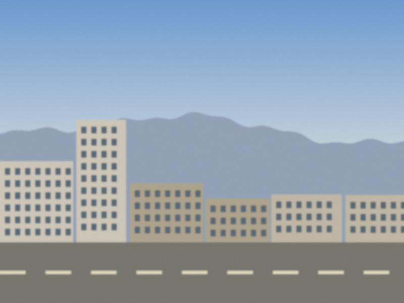

Three hours without internet
11 April 2013 · internet
Yesterday from 14:10 until 17:05 the whole of my district in Talas had no Attelkom connection. No explanation. I sat in the stairwell with the phone and tried to tether, the neighbour from the fourth floor was there already with the same idea. We looked at each other and said nothing.

The stairwell, 15:30, the only place with a signal.When it came back, I checked the router log: the line went down by itself and up by itself. If you know the fault, write me. If you are Attelkom, write me too, I will not tell anyone.
Lesson for clients: a site on a local host is fine when the whole country is online, and as good as a wall painting when the exchange has a bad day.
No Comments
Comments are closed.